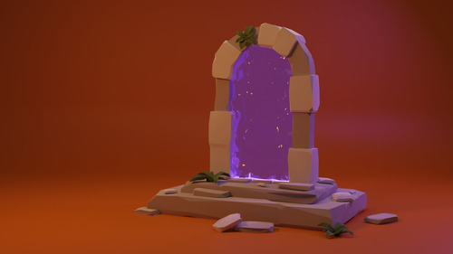

I had a few weeks between jobs in the summer of 2022 and spent that time learning how to use Blender with no previous experience. I used a really wonderful video series from CrossMind Studios. I would highly recommend this series over the usual donut or "low-poly room" tutorial; those might have a fancier end-product, but I don't think those types of tutorials emphasize the importance of learning Blender's hotkeys, all of which have saved me countless hours of guessing which esoteric menu holds a specific function.
I only actually learned about Blender for a month or two (off and on), so I hope if you are on the fence about at least learning the basics, that you decide to give it a go! I haven't really touched it much sense that initial ADHD hyperfocus moment, but I know I'll learn more and complete bigger projects someday!
üç© 3D-Modeled Art üç©
July 2022
3D modeling is extremely time-consuming, so I don't have a lot of projects to show off that I have completely finished, but the first one I truly finished in my first few weeks of using Blender is below. I wanted to make a cool 2K resolution wallpaper for my desktop, so I loosely followed a Polygon Runway tutorial for creating a fantasy-style portal to another dimension, and I really like how it turned out.
Click any image preview to open it at full resolution in a new tab:

August 2022
This mini-project is my attempt at a cel-shaded object. I cannot recall the tutorial I used, which is not very helpful to you, but I think it looks pretty cool! I tried to render from a few different angles so you get a feel for how the shield's appearance changes based on lighting and position.
February 2023
One of my dearest friends asked me to make a 3D-animated version of their record label's logo, so of course I obliged. It's not anything crazy, as I really didn't know how to keyframe animations and just Googled my way through that part, but I think it's pretty cool. I wish I would've made the logo a bit thicker, and I also wish I had learned more about materials/lighting in Blender because this would look so cool chromed-out: